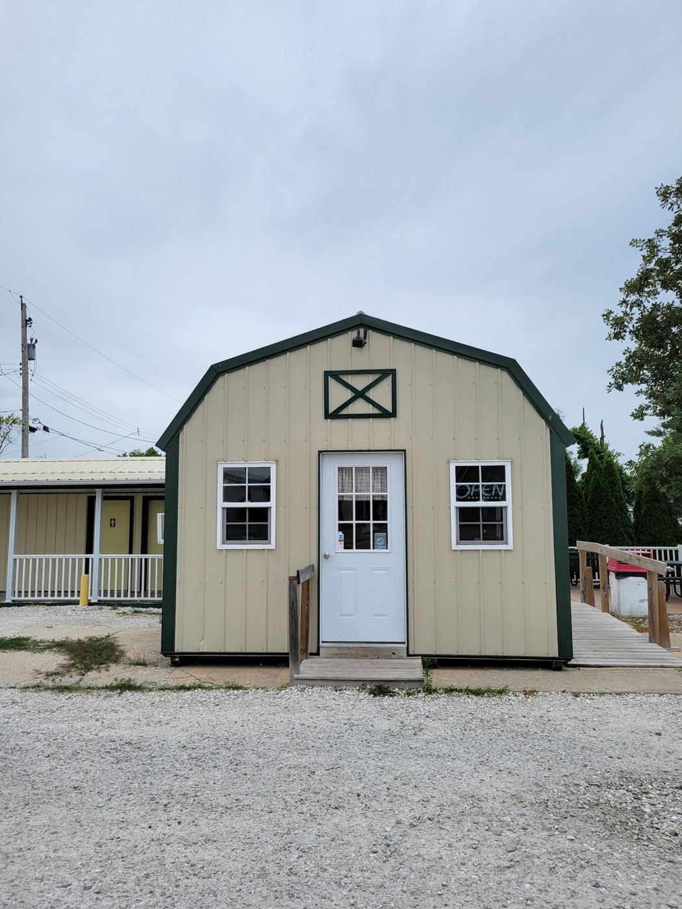

The Corndog Stand
Mt Sterling, IL · 4.8★ · 96 reviews
“At first glance it looks like a shed on the side of the road but don’t let the looks on the outside deceive you.”
Call your order inHours can change. Call ahead: (217) 617-8331
How a corndog gets made
Worth the drive
“This was the best hot dog/ corn dog that I've ever had the pleasure of eating AND WATCHING BE MADE. Yes, the take a regular extra- long hotdog (leather size) and batter it themselves, delivering a fried- little- piece- of- heaven…”
“Absolutely love love love this place best staff and amazing food. I make it a point to stop here when ever I’m up this way for work I wish we had one down in my neck of the woods! Absolutely love this place!!!!!”
“What to say, amazing food and amazing staff timely service nothing bad to say about this place at all. And before you think of going to mcds the price on feeding a family is just about the same, with amazing food and amazing…”
“Excellent corndogs made fresh! Hands down the best corndog I've ever had!! At first glance it looks like a shed on the side of the road but don't let the looks on the outside deceive you. It's a great place to stop and eat at if…”